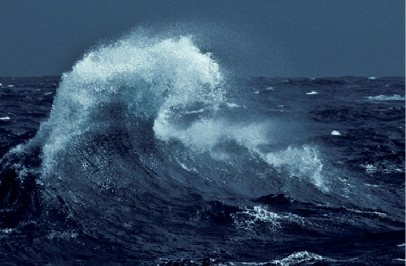

in this battered caravanserai, sojourn’s inertia lulls
portals ajar, yet none avoir, in pursuit of light apathy dulls
leaves wither, roads diverge, yet still, they stall and stay
with paths tread by the many, all lost in their own way
the grand cocytus ebbs and flows, daring hearts to seek
abode in limbo, blooms fade fast, turning faint and weak
the darkness subjugates the frost of the barren, boreal trail
grey swallows the sun; unbroken white and maddening winds assail
cacophonous silence, broken by thumping wings, oppresses
thoughts of warmth and tranquil sleep shatter as ice represses
the river's cold tears ooze through veins, a conquest enslaved
longing's embers long extinguished, by compunction depraved
lo, the caravanserai bore its quiet comforts still
weary smiles of travelers whispered of warmth at will
portals askew held eternities distant and vast
drops of imagination wrung fitfully, unadorned joys unsurpassed
a lichen-capped log bespeckled with the tiniest shoots
amidst delicate sprigs of mint, defying winter’s roots
the glacial nix drapes softly, blanket of the waking world
if only i hadn’t done anything - let life unfold 🌿
to saunter with your hand in mine is bliss
with flitting steps and homely hues of leaves
your gentle breath, i feel and reminisce
boutades of color rain with autumn’s heaves
outstretched fingers induce a sudden halt
overhead gray pierced by rays of luster
emerald fogs sway to evade assault
trees resign, enclasping golden bluster
nary a leaf could escape weary eyes
soaring birds pause in clarity’s embrace
lo, even paint couldn’t capture such skies
in my heart, i just want to kiss your face
your warm presence lingers, a sweet, soft trace,
while i’m with you, time simply slows its pace
daybreak’s exhale writhes around neck’s shivers
ashen skies and haze flow pale as rivers
heaven’s clouds descend unto windows fogged
unbidden voices buzz; my ears are clogged
faint inklings of the words are seeping through
of distant seeds, tomorrow’s trifles, who?
the fog extends beyond the reach of sight
it blurs, it jumbles - things just don’t feel right
i want it cleared; no longer overcast
morning feels like dusks of future past
on foggy glass, the scribbles haunt the door
headphones off, i yearn for what’s afore
let far off roads unwind as they may go
i’ll tread my own, and let the rest not show
the gaunt spire twists between the trees
weathered bricks surge and scrape night’s breeze
beside the door lies torrid rain
raucous murmurs of snares profane
stained glass eyes weep crimson tears
of unknown depths and ageless fears
before It has me in its grip
my tired car passes in a blip
late arrival’s glances
faces around the laptop
eyes peer up in doubt
despite all, dismissal stings
their words leave me feeling small
the net’s soothing swish
i’m seldom responsible
trailing points behind
no matter how hard one works
there’s no catching up to gift
globs of oil coagulate in my hand
as viscous drops glisten on hairs erect
goosebump’s tendrils curl in odd effect
the bean’s nectar possessed thickness unplanned
canvas, born anew, with pigment flutters
october’s shivers trace autumn’s ardor
chalky blotches prompt me to squeeze harder
the washed drops leave me with my mutters
hands run through the hair, feeling their plenish
once the colors dry, the muses burst in tune
afternoon brought with it languor's warm touch
with any opus there may be blemish
spontaneous ideas are man’s boon
ad may lib; they should be treated as such
to escape, i turn the handle on the wall
i let my little ocean fill up
watching over the delicate ripples
the bubbles engulf me in lightness
and warmth
to escape, i lower the backseats of my car
i make space for my beaten bike
its wheels pining for uncharted earth
the winds bellow past my ears as i switch gears
a helmet’s unnecessary
to escape, i leave the world above
i count the stripes on the caterpillars
the wooly bear’s bands run long
i think that means more winter
it slips my memory, though
baths, bikes, and bugs are nice, but above all,
to escape, i close my eyes and listen
to the cadences of your day
the sights, the sounds, the bio quizzes
how could i escape without you?
crunch go the corpses
dried, thronged, indistinguishable
they crackle and falter as they’re trodden
they keep dropping
one rustles across my face
puff, and it meanders behind
the crisp air roars
families, friends, squirrels
i seem to be the only one alone
it’s not so bad
though i wish i had someone to warn me
when i was about to hit a low-hanging branch
the sun slept in
its rays groggily peered through cumulus curtains,
warming my face and my soul
days can batter me sometimes
but when it’s just the woods, my bike, and i
my smile breaks its shackles
drifting away on cheerful breezes
this slightly sprightly balloon in my heart
it floats, it reaches for clouds of velvet
coiling light bolts the other direction
the ascent was uneventful
envisioning the heavens gave it joy
however hurried the great bolt might’ve been
despite the rains beckoning its presence
forethought might have spared the moment
the balloon felt itself deflate
it was really the balloon’s fault
this wasn’t the first time it let itself float
it didn’t know why it expected much
but still
would it be content on earth anyway?
why does language vacillate so
between a friend and foe
helpless to its juvenile whim
sometimes prose sometimes stim
elixir when the helicon flows
otherwise it just blows
uninspired words not worth writing
reading’s unexciting
october’s qualms wilt with november’s leaves
where color once frolicked, the dullness sleeps
late autumn’s pallor wreaks spirit’s doldrums
alas, how taking breaks from breaks bereaves
no matter how time molds and unfolds fate
i can't escape the desire to be great
inside me lies this rampant thing
this shapeless thing always in flux
this deafening thing with its incessant screams
this feral thing at raw flesh’s crux
it can’t be suppressed
it writhes in all my body’s sockets
it cavorts across my slumbering consciousness
it warms the frigid hands in my pockets
it only lays still in motion
when frozen fingers thaw to write
when a dry paintbrush swims in color
when retracted wings unfurl in flight
i can never tell why or when it will let itself out
but when it breaks its silence
this thing inside me starts to shout
looming above in triumphant blaze
a constant flame to affix light’s gaze
drafts may vie to extinguish its breath
but an undying fire fears not death
until there creeps the faintest flicker
droplets of wax pool faintly quicker
the firm wick stoops and the warm glow wanes
but an undying fire feels no pain
impermanent is form as is name
an undying fire needs not its flame
buzzing, buzzing, it will not stop
i’m trapped with this obnoxious pest
chasing, chasing, but never caught
i’ve no choice but give it a rest
it circles where i fail to reach
taunting me as the highways screech
through the windows, it feigns escape
this restless guest takes no break
i cannot seem to make it go
but part of me is fine with that
it’s nature and also my nature
what can’t be caught has to be chased
chased yet embraced
maybe sharing’s fine
because after all
we are connected
hush gives voice to uproar
where verses bloom, i wilt
time bears not a door
but a wall
on all four sides
yet i can’t be alone
noise permeates the cracks
typing, whispers, where’s my hush?
i want to be still
i want my voice to speak
not my mouth
stay silent